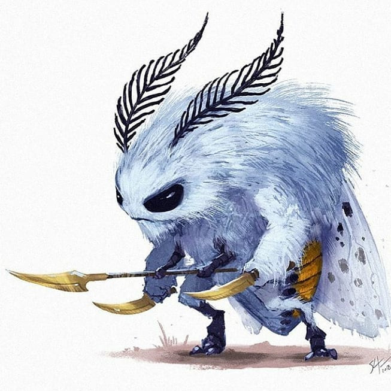
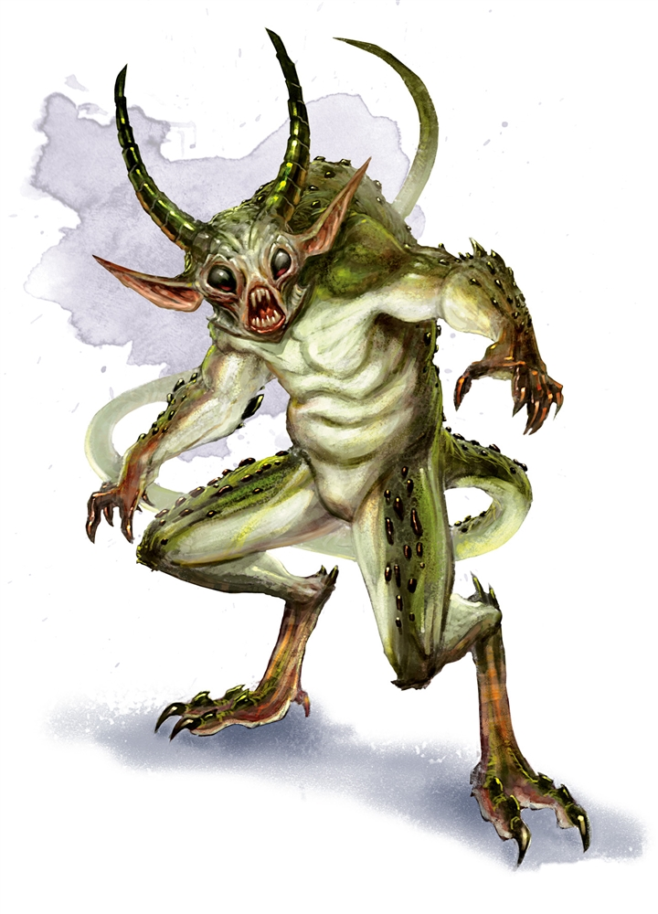
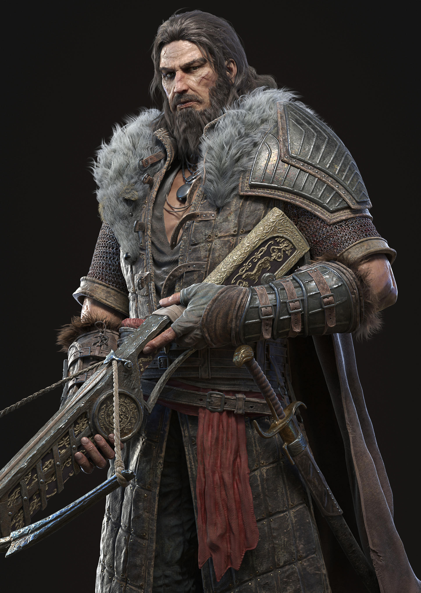
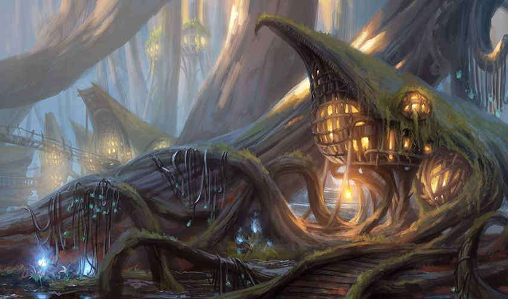

Armani

Görkem FİLİZÖZ tarafından canlandırılmış ve oynanmıştır. Görkem'in ikinci karakteridir. Armani İmparatorluk Toprakları'nda doğmuş çok zeki bir çocuktu. Kendi yaşıtlarına nazaran daha akıllı ve farklıydı. Felsefi bir düşünce yapısına sahipti. Büyü kavramı ile tanışmasının ardından bile büyüye karşı felsefi bir bakış açısı ile yaklaşıyordu. Büyü yapmaya yatkınlığı vardı ama içinde büyülü vaziyetten gelen doğuştan bir yeteneği yoktu. Armani'nin ailesi ile arasında farklı bir dinamik vardı. Armani büyüdükçe daha çok varoluşsal olaylara kafa yormak istiyor ve bir düşünür ya da bir araştırmacı olmak istiyordu, bunu da en iyi şekilde büyü kullanarak yapabileceğine inanıyordu, fakat ailesinin onun üzerine koyduğu farklı sorumluluklar vardı. Armani, aslen asil bir İmparatorluk Ailesi olan Şaşaalıkürk ailesinin bir ferdiydi. Fakat diğer asillerin aksine Armani, soyisim ile ilgilenmiyordu, sadece bilgi öğrenmek istiyordu. O zamanki ailenin lideri olan Walner Şaşaalıkürk ile, yani babasının aracılığı ile büyü öğrendi, özel hocalar ile çalıştı. En nihayetinde yaşı geldiği vakit bu ailenin lideri olması beklenen Armani, bu sorumluluğu reddetti. Bu sebepten ötürü babası, Armani'yi evlatlıktan reddetti ve evden kovdu. Evden kovulan Armani, bilgiyi en net ve kolay elde edebileceğini düşündüğü Beyaz Şehir'e doğru yola koyuldu. Beyaz Şehir'e beş parasız bir biçimde gitmedi, annesi sayesinde hatrı sayılır bir miktar para almayı başarabilmişti. Bu parayı temel ihtiyaçlarını karşılamaya ve büyü öğrenmeye harcadı Armani. Genç yaşında Dilek Büyü Koleji'nin sınavlarına katıldı ve diyardaki en prestijli büyü akademisine girmeyi başardı. Bu akademide büyü bilgisini üst seviyelere taşıdı ve felsefi çalışmalar sürdürmeye devam etti. Yaşamının çok uzun bir bölümünü bu akademide, önce öğrencilik sonra da hocalık yapacak şekilde geçirdi. Büyüye karşı yaklaşımı ve büyü bilgisi engin seviyelere ulaştığında Paragon tarafınca ona diyara hizmet etmesi için bir teklif geldi. Armani, Paragon'un teklifini kabul etti ve diyara Büyü ve Tanrısallık kavramlarını araştırarak hizmet etti. Ayrıca insan yaşam standartlarını yükseltebilmek adına çalışmalar yürütmek için İmparatorluk tarafından fonlandı. Paragon'un bünyesine girdikten sonra Armani bir kız ile tanıştı. Bu kız, Marvela adındaki bir kızdı ve kraliyet soyundan geliyordu. Armani'nin üzerinde çalışma yürütttüğü konuya ekstra bir merak ve ilgi duyuyordu. Armani'yi anlayabilen sınırlı sayıda gençlerden en yegane olanıydı Marvela. Armani zaman içerisinde bu kızı öğrencisi olarak kabul etti ve çalışmalarında asistanı olarak kullanmaya başladı. Marvela kraliyetin bir ferdi olduğu için burada bulunduğu bilinmemesi gerekiyordu, bu yüzden bu çalışmalar sırasınca Hocası Armani'ye kaçarak ona gizlice eşlik ediyordu. Armani'nin araştırdığı konu, zamanla değişime ve korozyona uğramaya başladı, aynı Armani'nin idealleri ve fikirleri gibi. Tanrısallık ve Büyü kavramları, yerini "Tanrılar ölebilir veya dirilebilir mi?" sorularına bırakmaya başlamıştı. Armani yozlaşmaya yüz tutmuş bir biçimde bu araştırmaları son hızda Marvela ile birlikte sürdürüyorken, bilinmeyen bir olayun neticesi olarak Armani'yle birlikte onun bütün çalışmaları durduruldu ve Armani'nin hafızası silindi. Silinmiş hafızası ile birlikte Armani, Paragon'un ilkelerine ihanet ettiğinden ötürü Paragon'dan ve Dilek Büyü Koleji'nden sürgün edildi.
Armani, geçmiş yaşantısını hatırlamayan, hayatını bir şekilde geçirmiş bir büyücü olarak Zonthar civarında yaşayan yaşlı ve bunamış bir büyücü olmuştu. Daha öncesinde kim olduğunu, neye hizmet ettiğini ve ne çalışmalar yürüttüğünü hatırlamıyor ve bunu sorgulama ihtiyacı bile duymuyordu. Kendisine bu denli kuvvet ile etki eden bir büyünün etkisine mağruz kalmıştı Armani, fakat bu büyünün etkilerinden bile muzdarip olduğunun farkında değildi. Artık yalnızca içmeyi ve tütütünü tüttürmeyi seven yaşlı bir büyücüydü Armani. Erzağı bittiği vakit, erzağını yenileme adına Zonthar'a gelir ve takviye yapar, kendini toplumdan uzak ve soyut bir biçimde tutardı. Kulübesinde onun en yakın arkadaşı Charlie ve diğer ruhlar ile birlikte sakin bir yaşam sürüyordu. Charlie onun en iyi arkadaşıydı, yaklaşık 15 santim boylarında bir orman ruhuydu ve en kadim dostuydı, fakat Charlie ile ne zaman tanışmıştı veya nasıl tanışmıştı... Armani kendine bu soruları sormayı bile aklından geçirmiyordu çünkü onun için ortada yanlış olan bir şey yoktu. Yaşı gereği hafıza kaybı başlamış bir adamdı sadece. Fakat Armani kadar yaşlı ve sınırlı günleri kalmış bir büyücünün kaderini değiştirecek bazı kişiler, onun hayatına girecekti.
Armani için sıradan bir erzak yenileme günüydü o gün, lakin bu sıradanlığı bozacak olaylar baş gösteriyordu. Armani Zonthar'a geldiği bir vakitte, kasabanın goblin baskını ile karşı karşıya olduğunu gördü. Zonthar Armani'nin pek de umrunda olmasa da, burası onun erzak alışverişini yapabildiği yegane yerdi, o yüzden bu yerleşkeyi korumaya karar verdi. Burada, daha sonrasında birlikte Carpe Diem olarak adlandırılacakları bir grup insan ile tanıştı. Bu grubun üyeleri olan; Daynore, John, Bob ve Damian adındaki gençler ile ve onların yanında savaşan 2 Efsungarla birlikte, gelen büyük goblin taaruzunu püskürtmeyi ve goblinleri yenmeyi başardılar. Alan tesirli alevtopu büyüsü sayesinde Armani, bu savaştan galip çıkılmasında büyük katkı oynadı. Bu gençlere; uyuklayıp kalmasıyla, adlarını karıştırmasıyla ve onları dinlememesiyle gibi sebeplerden ötürü çeşitli zorluklar çıkarmış olsa da bu saldırının atlatılmasını sağlamıştır. Bu güçlü ama yaşlı büyücünün maharetlerine tanık olan Daynore, onu grubuna katmak istemiştir, lakin Armani bu teklifi net bir şekilde reddetmese de hayatından memnundur ve onlara katılmamıştır. Büyük Zonthar Muharebesi'nin ardından birkaç gün içerisinde grup ile Armani yollarını ayırmıştır; grup yeni güzergahını Verdun'a çevirmiştir fakat Armani burada kalmayı tercih etmiştir. Evini ve çevresini korumayı başarmış olan Armani, burada belirli bir süre daha geçirmeye karar vermiştir. Birkaç ay boyunca büyük bir sorun teşkil eden hiçbir olay ile yüzleşmemiş, fakat uzun zamandır büyü yapmadığından ötürü paslandığını fark ettiği için kendini büyü antenmanlarına vermişti. Lakin Armani'nin evini ve Zonthar'ın bekasını tehlikeye atacak bir durum daha yaklaşıyordu...
Aylar sonra günün birinde Armani, rüyasında hiç hayra alamet şeyler görmemiştir. Bir Divination Büyücüsü olan Armani, bazen rüyalarında olumlu veya olumsuz olabilecek bazı olayların projeksiyonlarını görebiliyor ve belli bir ölçüde geleceği tahmin edebiliyordu. Onun bu rüyasında geldiğini öngördüğü durum, Zonthar'ı ve Armani'yi tehdit ediyordu. Bir grup kırmızı cübbeli kültistin Zonthar'a gelip kan akıtarak ritüeller yaptığını ve katliam çıkardığını gören Armani, rüyasını Zonthar'ın yeni Valisi olmuş Menzher'e anlatmıştı. Menzher'den maddi anlamda bir para beklentisi karşılığında, Zonthar halkından alabileceği kadar kişiyi evine alabilmeyi teklif etmişti. Ama bu teklifi yaptığı zaman, öngördüğü geleceğin çok da uzak olmadığını, hatta Zonthar'ın kapısına dayanıp çattığını anladılar. Kasabanın yeni Valisi Menzher, halkı için akıllıca bir karar verdi ve Armani'nin sunduğu sığınak teklifini belirli bir miktar para karşılığında kabul etti ve kaçırabildiği kadar insanı, alel acele bir şekilde Zonthar'dan uzaklaştırdı ve Armani'nin kulübesine getirdi. Kayıpların hepsi önlenemedi fakat Armani sayesinde Zonthar halkının bütünlüğü bozulmadı ve çoğunluk güvenli bir noktaya alındı. Lakin bu kültistler buraya kan akıtmaya veya katliam yapmaya gelmiş gibi durmuyorlardı. Haftalarca Zonthar'da beklemeye devam ettiler. Demir El'in kasabadan ayrılması ile ve askerlerinin çoğunun Goblin muharebesinde ağır yaralanıp ölmesinden dolayı Zonthar, askeri açıdan zayıf bir konumdaydı ve olası bir savaşı kaybedecek noktadalardı. Armani bile bu kadar kültisti, güçlerini bilmeden yok edemeyeceğini düşünüyordu. Lakin haftalarca süren bir bekleyişin ardından bazı maceracıların bu köye yeniden geldiğini fark etti Armani. Gelen kişiler Carpe Diem grubuydu. Armani bu olanları bir gözlemleme büyüsü aracılığı ile izliyordu. Damian denen kanı kaynayan genç çocuk, gözü kan bürümüş şekilde kültistlerin liderine saldırmıştı ve savaş patlak vermişti. Savaşın kendine bir çıkar veya fayda sağlamayacağını düşünen Armani bu savaşa karışmadı. Bu savaşın neticesinde ise Carpe Diem'den iki kişi ölmüş, ayakta bir tek Bob adındaki devasa yarı orc duruyordu. Lakin bu kültistlerin sıradan bir amaca hizmet etmediğini anlayan Armani, Bob'a yaklaşan yaşlı bir adamdan hissettiği devasa büyü aurası sonucunda yola koyulmuş ve olay mahaline yetişmek için harekete geçmişti. Gene de yaşlılığından ötürü Armani onlara yetişmeyi başaramasa da, savaştan çıkmış bu yaralı gruba evini açmayı teklif etti ve yaralarını saracak bir fırsat sundu. Fakat Bob adındaki yiğit oğlan, kulübenin girişinde Charlie'ye bir saygısızlık yapmıştı. Charlie bu denli bir terbiyesizliği kabul etmedi ve bu yarı orcu bir duelloya davet etti. Bob dalga geçerek bu duelloyu kabul etti, fakat sonra hiç beklemediği bir biçimde Armani tarafından küçültüldü ve kabaca Charlie ile aynı boyutlara geldi. Charlie Bob ile çekişmeli geçen bir duelloya tutuştu, fakat en sonunda Galip Charlie'ydi. Bob'a iyi bir savaşçı olduğunu söyleyerek hem onu arkadaşları önünde küçük düşürdü, hem de onun savaşçı kimliğini övdü. Daha sonrasında ise Daynore müteşekkir bir biçimde Armani'nin yardımseverliğini takdir etti ve yaşanan olayları yaşlı büyücüye anlattı. Armani böylece Kal'El, S.A.R.S. ve Flagellant gibi kavramları Daynore'den duymuş oldu. Bu kavramlar çok garip bir şekilde Armani'ye yabancı gelmiyordu, ve onu rahatsız etmişti. Daynore bu noktada Armani'ye güvenmeyi seçerek ona Zincirdarlar'dan öğrendikleri bilgileri de söyledi ve Kal'El denen tarikatın sığınağını bulmakla görevlendirildiklerini söyledi. Bu bilgiler Armani'yi olması gerektiğinden çok daha fazla rahatsız etmişti. Elindeki kaynakları kullanarak bu öğrendiği bilgilere dair yeni şeyler öğrenmeyi denedi fakat hiçbir şey bulamamıştı. Bu Armani'yi daha çok rahatsız etmişti. Ayrıca grup Damian'dan vazgeçmemişti ve Menzher'den öğrendiği bilgiler ile elf topraklarına Alve Dorei'ye gitmek istiyor ve oradaki bir druid olan Naixana aracılığıyla Damian'ı diriltmek istiyordu. Daynore sayesinde Damian'ın Tanrı Haldir'in Seçilmişi olduğunu öğrenen Armani, kendine kümulatif toplamda yetecek kadar motivasyon bulmuştu ve gruba katılarak onları Alve Dorei'ye ışınlamayı teklif etti. Bu tarikatın ardındaki gizem, bu güçlerin arkasındaki sır ve bu tanrısallık ile seçilmişliğin arkasındaki netice, Armani'nin çözmesi gereken bir gizemdi ve bundan sonra olacak bütün olayları kendi gözleri ile görmeliydi. Bu grupta özel bir şeyler olduğunu Armani anlamıştı fakat Zincirdarlar'ın bile karıştığı bir mevzunun geçiştirme olmayacak kadar büyük olduğunun da farkındaydı. Armani'nin sunduğu teklif gruba cazip gelmişti ve bu teklifi kabul ettiler. Bu teklif ile Armani'yi bir Carpe Diem üyesi olarak kabul ettiler. Işınlanmadan önce, buraya kadar ayak izi takip ederek gelmiş bir savaşçı ile karşılaştılar. Julius adındaki bu genç, Daynore'nin yakın bir arkadaşı ve Bob'un ise eski bir rakibiymiş, buraya Beyaz Şehir'den Daynore için ona yardım etmeye gelmiş. Armani ile birlikte Julius'u da bir Capre Diem üyesi olarak kabul etmelerinin ardından grup olarak elf topraklarına ışınlandılar ve Damian'ı diriltebilecek o kadını aramak adına yola koyuldular.
Elf topraklarında gitmeleri gereken güzergah Eladrin Şehri'ydi. Bu şehir yalnızca, bazı spesifik zaman aralıklarında Materyal Düzlem'de beliriyordu. Bu Eladrin şehri her vakit kendini gösteren bir şehir olmadığı için, sıradaki vakti beklememek adına ellerini hızlı tutup bu şehir halihazırda yakın vakitlerde kendini göstereceği için çabuk olmaları lazımdı. Alve Dorei topraklarında zorlu yüzleşmeler ile karşılaştılar; periler ile dostuluk kurdular, Treantlar ile savaştılar ve yaşayan ormanın puzzlelarını çözdüler. Bu süreçte Armani, gruba büyücü kulenisi yaratarak bir sığınak sağladı, grubu taaruz büyüleri ile sıkıntılı durumlarda kurtardı ve uçan süpürgesini Daynore ile paylaşarak gruba yardımcı oldu. Daha sonrasına ise ellerini olabildiğince hızlı tutarak belirli bir süre sonra gizli Eladrin Şehri'ni bulabilmeyi başardılar ve orada aradıkları Druid olan Naixana'yı buldular. Grup Naixana ile hızlıca konuşmak için ayrılmak üzereyken Armani, eski bir tanıdığı, sevmediği bir dostu diyebileceği Berikul Rüyatepe adındaki kadim büyücü ile karşılaştı. Berikul, fani zevkleri tartışmalı ve topluma göre farklı olan bir adamdı. Armani'nin gençliğinde onunla dost olmuş ve birlikte araştırmalar yürütmüşlerdir. Lakin toplumun ahlak kuralları göze alındığı vakitte şaibeli tercihleri ve zevkleri olan bu adam, birlikte geçirdiği uzun dönemler sonrasında Armani'den hoşlanmıştı ve Armani'nin sarhoş olup ayrıyetten fazla tüttürdüğü bir akşam, tabu bir ilişki yaşamışlardı. Armani'nin kişisel zevkleri ve tercihleri bu tarz bir yönelimde değildi, bu yüzden yaşanan bu olayı hayatında yaptığı en büyük hatalardan birisi olarak görür. Gene de Berikul, herhangi bir gücenme olmadan bu birlikteliğin iki tarafa da yaramayacağını kabul ederek bu durumu yalnızca o gecede yaşananlar ile bırakmıştır. Berikul Armani'ye buraya geldiğinde yardım etmiş, ona yardımcı olabilecek bilgiler vermiş ve grubu direkt olarak kendisi Naixana'nın yanına götürmüştür. Carpe Diem üyeleri, böylece öğrenmişlerdir ki Naixana ve Berikul kardeştir. Berikul sayesinde bu ritüelistik ücret için ödeme minimuma düşürülmüş, bir arkadaşa yapılan güzel bir jeste dönüşmüştür. Grup Naixana'nın istediği ücreti karşıladıktan sonra Damian'ı reenkarne etmeyi başarmıştır. Damian yeniden bir insan olarak doğmuştu fakat reenkarnasyondan sonra tamamen değişmişti. Yüzü aynı değildi ve eskisi gibi görünmmüyordu, saç rengi beyaza dönmüştü ve en önemlisi kişiliği değişmişti. Sanki doğan kişi Damian değil de başka birisi gibiydi. Armani'nin zayıf hafızası bile bu delikanlı ile ölen adamın aynı adam olmadığını ayırt edebilecek vaziyetteydi. Berikul Armani'ye bunun büyünün kuvvetle muhtemel olabilen bir yan etkisi olduğunu söyledi. Bu grubu şaşırtsa da işlerine gelen bir şeydi; akıl sağlığı yerinde olan, yakışıklı ve örnek bir insan olarak hayata geri dönmüştü Damian. Damian'ın dirilmesi ardından, Berikul'un da Armani'ye verdiği tavsiyeler ile birlikte Armani, Capre Diem'in artık istediklere yere girebileceğini düşündüğünü ve bunu oylamaları gerektiğini söyledi. Armani'nin çözmesi gereken gizem önemliydi ve yaşlı büyücü, sınırlı günü kalmış hayatından daha fazla gün feragat etmek istemiyordu. Bu noktada grup; Damian'ın da dirilmesiyle, Armani ile Julius'un onlara katılmasıyla ve atlattıkları badirelerden edindikleri güç ve tecrübeyle Underdark'a inebileceklerine karar verdi. Alve Dorei yakınlarında, sınır bölgesi olarak kabul edilen bir mağara girişinde Underdark'a uzanan bir Drow Tüneli olduğunu öğrendiler. Elf hükümetinin koruduğu bu tünelden Underdark'a inmeye karar verdiler. İniş için mağaranın yolunu tutmadan evvel son hazırlıklar ve alışverişler yapıldı. Ayrıca bu noktada Berikul, köle olan Bob'un özgür kalabilmesinde Daynore'ye bir kez daha yardımcı oldu ve genç yarı orc kölelik statüsünden kurtuldu. Bob'un özgür kalmasının ardından, belirledikleri geçite doğru yola koyulduklarında, şanssız bir karşılaşma ile bir Gümüş Ejderha ile yolları kesişti ve anlaşmazlık neticesinde Carpe Diem ile ejderha birbirine girdi. Ejder savaşı çok zorlu geçmişti; Armani neredeyse kendini kızartarak öldürüyordu, Damian'ın bütün kemikleri kırıldı, Daynore'nin ekipmanı zarar gördü. Fakat en önemlisi Julius, maalesef neredeyse 120 feet yukarıdan düşerek hayatını kaybetti. Bu yüzden grup Julius'u da Reenkarne etmek zorunda kaldı. Ejder'den hasat ettikleri parçaları satarak parayı çıkardılar ve Julius'u da dirilttiler fakat normalde; sevecen, güleryüzlü, ılımlı ve komik olan Julius, tamamen zıt bir kişilikte bir Yarı-Elf olarak yeniden dirildi ve sanki Damian ile roller değişmiş gibi, gruba sorun çıkarmaya başlamıştı. Alve Dorei'de son alışverişlerini yaptıktan sonra grup Underdark'a inişini gerçekleştirmiştir.
Underdark'a indikleri vakitten itibaren, güneş girmeyen ve daima karanlık olan bir yerde yürümenin deformasyonu olarak zaman algılarını kaybetmeye başladılar. Armani bir insandı ve önünü göremiyordu. Underdark'ın karanlık atmosferinde gün geçtikçe Sirius'a bağlı konuma gelmeye başladı. Sirius'un yaratabildiği "Günışığı" olmasa Armani kafayı yer ve delirmeye başlardı. Bunun farkında olan yaşlı büyücü gene de minnettar olmak yerine, bunun zaten Sirius'un yapması gerektiği görevi olduğunu düşünüyor ve teşekkür etmiyordu. Yolculuklarına Underdark'ta devam ettikçe Kal'El'in inini bulmak adına, yerini öğrendikleri bir drow kalesine doğru gitmeye karar verdiler. Oraya giderken, Hook Horrorlar gibi çeşitli garabetler ile savaştılar ve Gelecekten Gelmiş 2. bir Daynore ile tanıştılar. Gelecekteki Daynore, Capre Diem'e potansiyel zorlukları ve olabilecek katastrofik senaryoları anlattı ve günümüzdeki Daynore'ye bir hediye verdi, zamanı gelince kullanması adına. Armani bu adamın varlığı karşısında bile çok şaşırmıştı ve heyecanlanmıştı. Bu Daynore'nin varlığı, çoklu zaman çizgilerinin var olduğunu kanıtlıyordu, çünkü Armani araştırmalarından hatırlıyordu ki, kişi kendi zaman çizelgesinde ileriye veya geriye anlık olarak gidebilirdi, fakat bu Daynore bu zaman çizelgesine anlık olarak gelmemişti veya yok oluyor gibi gözükmüyordu. Bu adam söylediklerinde haklıydı, yalan söylemiyordu ve farklı bir zaman çizelgesinden bizim zaman çizelgemize gelmişti. Bunun insanlık tarihinin en büyük buluşu olduğunu düşünüyordu Armani, zaman çizgileri arasında potansiyel bir yolculuk imkanının bilinmesi gerekiyordu, fakat Gelecekteki Daynore insanlığın buna hazır olmadığını söyleyerek Armani'yi uyardı ve ondan bu konu hakkında kimseye bahsetmemesini istedi. Armani bunu bedava bir şekilde yapmayacağını dile getirdi ve o zaman çizelgesindeki rolünün ne olduğunu öğrenmek istediğini söyledi. Gelecekteki Daynore Armani'nin ona kendi zaman çizgisinde, zaman çizgileri arasında yolculuğu keşfetme konusunda yardımcı olduğunu ve bu araştırmayı onun yürüttüğünü söyledi, yani bu yolculuğu bulan kişi Daynore değil, Armani'nin ta kendisiydi! Armani duydukları doğrultusunda gurulanmış ve mutlu olmuştu, Daynore'nin yalan söylemediğini biliyordu. Farklı bir zaman çizgisinde Daynore ile, kaotik bir senaryoyu engellemeye çalışıp başarısız olmuşlardı ve sonrasında ise bunu başka zaman çizgilerinde başarabilmek için Zaman çizgileri arasında yolculuğu keşfetmişlerdi. Armani öğrendiği bilgiler doğrultusunda, tarihin bir tekerrürden ibaret olduğunu söyleyerek, bu kaderin kaçınılmaz olduğunu dile getirdi ve Daynore'ye bunları kimseye söylemeyeceğine dair yemin etti ve ona yardımcı olacağına söz verdi. Bu karşılaşmanın ardından Gelecekteki Daynore ile vedalaşıp yollarına koyuldular. Yolda geçirdikleri belirsiz bir vaktin ardından Vincent adındaki bir Necromancer ve onun Nagaları ile savaştılar ve bu savaştan muzaffer ayrıldılar. Lakin Necromancer'ın inine girdiklerinde oradaki tuzaklar tetiklendi ve ikincil bir savaş esnasında Julius maalesef hayatını kaybetti. Onu nerede bile olduklarını hatırlayamayacakları bir noktaya hiçbir belirteç olmadan gömmek zorunda kaldılar. Julius'un yasını tutmalarının ardından grup Drow kalesine doğru yola çıkmıştı. Kaleye varmadan önce buldukları bir mağara oyuğunda dinlenmeye karar verdiklerinde bir kadın ile karşılaştılar. Mağarada garip giyinimli, uzaylı görünümlü, upuzun bir mızrak kullanan bir Githyanki oturuyordu. Damian bu kadına fazla ilgi duyuyordu, fakat kadın konuşmasını bile bilmiyordu, Daynore onunla başka bir dilde konuşarak anlaşıyordu. Armani de Daynore gibi bu kadın ile konuşabiliyor ve bu kadına sorular soruyordu. Daynore daha ılımlı ve sevecen bir tavır alırken Armani bu kadına karşı daha sert ve sorgulayıcı sorular soruyordu. Daynore sayesinde, bu kadın ile ortak bir amaç bulmalarının ardından, Fen'le adındaki bu Githyanki'yi gruplarına dahil ettiler. Grupta bir fikir ayrılığı söz konusuydu, sanki Julius'un yerini dolduruluyormuş gibi hissettiren bir durum mevcuttu. Bob ve Armani bu kadının katılmasının yanlış birşey olduğunu düşünüyordu, öte yandan Damian, Daynore ve Sirius ise bu kadının gelmesini destekliyordu. Armani bunun ileride bir bölünmeye sebep olacağına benzer bir emareyi rüyasında görmüştü; benekli bir insan ile birlikte birileri gruptan ayrılıyordu. Armani bu kadının elbet bir bela getireceğini söylese de, en nihayetinde bu kadını da yanlarına almaya karar verdiler ve Drow kalesine ilerlemeye devam ettiler. Drow kalesine gittikleri vakit grup iyi karşılanmadı ve kendilerini bir ölüm tuzağının içerisinde buldular. Onların yardımına Gelecekten Gelen Daynore yetişmiş ve onları kurtarmış olsa da, Gelecekteki Daynore büyük bir grup ile uğraşıyorken, nispeten daha küçük fakat elit bir grup ters taraftan grubu sıkıştırmıştı ve bir çatışma kaçınılmaz gözüküyordu. Fen'le düşündüklerinden çok daha iyi savaşıyordu, ve zor bir savaşın, kümulatif katkılar ile altından kalkmayı becermişlerdi lakin bu savaşta Armani, bir büyücünün çağırdığı küçük bir Quasit yüzünden hayatını kaybetmişti. Bir Drow çağırıcının yaptığı bir conjuration büyüsü sonucunda bir büyü manifestosu olarak ortaya çıkan bu yaratık, Armani'ye savaş boyunca nefes aldırmadı ve aman vermedi. Bu hilkat garibesi yaratık önce görünmez oluyor, ondan sonra da zehirli dişleri ile Armani'yi ısırıyor ve Armani'nin yanından kaçmasına izin vermiyordu. Kendisini izole bir durumda bırakmış olan Armani için işler hiç iyi gitmiyor, bu yaratıktan kurtulamıyordu. Savaşın heyecanı ve ölüm tehlikesinden ötürü bu yaratığı başından def edemeyen Armani panik yapıyor ve bazen elinde oluşturduğu Fireboltları istemi dışında patlatıyor ve kendine zarar veriyordu. Böyle hem drowların saldırısı, hem Quasit'in pususu hem de kendine verdiği zarar neticesinde Armani savaşta şehit düştü. Armani, Underdark'ta hem bilgisi hem de gerekli büyüleri ile grubun çok işine yarıyordu, bu yüzden Armani gibi usta bir büyücünün cesedini drowlara veremezlerdi, ayrıca Armani'nin yakın dostu olan Charlie'ye de söz vermişlerdi onu sağ sağlim geri getirme konusunda. Bu yüzden Armani'nin cesedini alıp, Underdark'ın başkenti olan Saphentitte adındaki şehire gitmeye karar verdiler.
Armani'yi diriltmek için çıktıkları yolda gene birçok farklı yaratık ile savaştılar ve ilginç bir şekilde Sirius'u, bir Harpy prensesi olan Zaerephys ile evlendirerek, prensesi de gruplarına kattılar. Saphentitte'ye geldiklerinde hem Armani'yi dirilttiler, hem de Kal'El'in sığınağı ile alakalı bilgiler topladılar. Bu süreçte Ölüler Meclisi adındaki kuruluş, aldıkları paranın misliyle hakkını ödeyerek Carpe Diem'e çok yardımcı oldu. Bu süreçte Ölüler Meclisi'nden Sylas ve Skull, grup ile bizzat ilgilendi. Armani'yi onlar dirilttiler ve Kal'El'e giden yolun Syfelin adındaki Drow şehrinden geçtiğini araştırarak öğrendiler. Yapacakları plan ve para konusunda anlaştıktan sonra Carpe Diem, Sylas ve Skull birlikte Syfelin'e doğru yolculuğa çıktı. Ölüler Meclisi çok profesyonel bir şekilde çalışarak, hiçbir sorun yaşanmadan onları Syfelin'e getirmeyi başardı. Bu noktadan sonra ise Ölüler Meclisi ile grup yollarını ayırdı. Syfelin'de yeni bir rehbere ihtiyaçları vardı, bu yüzden bir drow tavernasına girerek kendilerinin işine yarayacağını düşündükleri bir drow ile anlaştılar ve o drowdan, onları Drow Tünelleri'nden geçirerek istedikleri lokasyona onları ulaştırmasını istediler. Bu drowun ismi Minofein'di ve birçok yarası olan erkek izci bir drowdu. Bu drow, grubun başına birçok bela açtı, istenmeyen düşmanlar ile savaşmalarına sebep oldu ve grubun drow tünellerinde kaybolmasına sebep oldu. Kaybolduktan sonra yolunu bulabilmesi çok uzun zaman aldı grubun ve Minofein'in, fakat bir şekilde grubu istediği noktaya getirmeyi başardı bu iştutmaz drow. Bu tünellerde Sirius ve Armani sayesinde, hem Saphentitte'de hem de Syfelin'de duydukları bir efsane hakkında ekstra bilgiler öğrendiler. Kal'El, cennetten kovulmuş ve yozlaşmış "Düşmüş Melek Fatih Harthog" adındaki ölümsüz olan bir melek ile anlaşma yapmıştı ve Kal'El'in üssüne giden bu yolda onları bu melek bekliyordu. Grup kendi içerisinde fraksiyonlara ayrılmıştı; bazı kişiler ölümsüz bir meleğin adı üstünde ölümsüz olacağını düşündüğü için bu savaşa girmemeleri gerektiğini düşünüyordu, fakat Kal'El'in sığınağına gitmenin başka alternatif bir yolu yoktu. Armani, bu meleğin varlığından özellikle korkuyordu, yukarı düzlemde tanrılara hizmet eden varlıkların ölümsüz olduğunu biliyordu ve karşılarında bir rakip olarak düşmüş bir melek olacaktı. O yüzden bir meleği nasıl alt edebileceğini ve ölümsüzlüğü nasıl kırabileceğini öğrenmek istiyordu. Bu sebepten ötürü Sirius'un gücünün kaynağı olan, onun Matron'u Mirabelle ile büyüsel bir biçimde iletişime geçti. Mirabelle ile iletişimde olduğu süre esnasında, bir Archangel'a nasıl bir meleği öldürebileceğini sordu. Mirabelle, Armani'nin niyetindeki gerçek hinliği yakalamıştı ve ona nasıl yapılacağını söylemedi, fakat bir meleği öldürmenin mümkün olduğunu belirtti ve kendi Warlock'u olan Sirius'a bu meleğin ölümsüz doğasını delmek için gereken gücü bahşetti. Armani istediğini alamamanın siniri ve bir melek ile yüzleşmenin korkusu neticesinde, Mirabelle'nin sözlerinde bir yalan aradı. Mirabelle'ye inanmayan Armani, bu savaştan kaçınılması gerektiğini söyleyerek grubu ikna etmeye çalıştı. Sirius, Armani'nin Mirabelle'ye güvenmemesini bir saygısızlık olarak nitelendirdi ve büyücünün ahmaklık ettiğini, bir Archangel'ın sözünde yalan aranmaması gerektiğini söyledi ve o da grubu bu yönde ikna etmeye çalıştı. Bu yüzden grup üyeleri arasında oraya gidip gitmemeleri gerektiğini konu alan bir tartışma çıkmıştı ve bu tartışma iyice alevlendi. Bu tartışmanın ardındaysa grup parçalanmaya ve bölünmeye başladı. Bu bölünmeyi fiziken başlatan kişi ise Damian oldu. Damian, drow tünellerinden çıktıktan sonraki ilk dinlenme esnasında hiçbir şey söylemeden ve nereye gittiği belli olmayacak şekilde grubu terk etti. Bu hem Bob'u hem de herkesi şaşırtmıştı. Bu gerçek karşısında motivasyonunu ve akıl sağlığını kaybeden Fen'le, Damian'ın ardından grubu terk eden ikinci isim oldu. Bu yola 2 kişi eksik devam etmeleri gerekiyordu, ve yollarının üzerinde bir engel olarak ölümsüz bir melek onları bekliyordu.
Bu meleğe karşı olan savaşın zor, hatta neredeyse imkansız olacağını düşünen Armani, bu savaşa katılmayı reddetti ve gruba engel olmaya çalıştı. Armani bu noktada grubu yardım beklemeye davet etti, fakat Armani eğer beklerlerse meleğin ve Kal'El'in elinin güçleneceği gerçeğini yok sayıyordu. Armani bu noktada gruba engel olmayı başaramadı ve grubun aptalca davrandığını söyleyerek onları ölümlerine terk etti. Bu aptallıklarına katlanamadığını ve istiyorlarsa o melekle savaşmalarını söyledi fakat Armani savaşmayacaktı, o savaşa girmeyecek şekilde beklemeye karar vermişti. Carpe Diem'e küserek onlardan uzaklaştı. Underdark'ın karanlık atmosferinde önünü göremeyen Armani, uçan süpürgesine binerek bir meşale yaktı ve bir aptal gibi kendisini açık hedef haline getirdi. Kalan grup üyeleri, Bob ve Daynore'nin özgüven konuşmasının ardından, ölümlerinin muhtemel olduğunu bilmelerine rağmen, bu melek ile savaşmaya gittiler. O sırada Kal'El'in sığınağının yakınlarında devriye gezen bir suikastçi, Armani'yi gördü ve ona bir suikast düzenleyerek öldürdü. Armani'yi öldüren kişi John'un babası olan Elton'du. Elton'un Armani'yi öldürdüğünü kimse görmedi. Bu usta suikastçi, Armani'nin üzerinde bulunduğunu bile bilmediği bir kitabı çaldı. Armani'nin daha önceki hatırlamadığı hayatında yürüttüğü araştırmaları kayıt aldığı o defterini çaldı. Elton, bu kitabın Armani'de olduğunu ve Armani'nin bu kitabı bir Demiplane'nin içinde sakladığını biliyordu. Bunu Elton'a söyleyen kişi ise, Kal'El'in Lideri konumunda olan Marvela adındaki kadındı. Marvela, Armani'nin hatırlamadığı hayatında onun öğrencisiydi ve asistanıydı. Aynı zamanda Marvela, kraliyet soyundan gelen, Du Couteau soyismini taşıyan bir asildi. Armani'nin Tanrılar hakkında araştırmalar yürüttüğünü bilen Marvela, onun "Tanrıları Öldürme ve Diriltme adındaki araştırma kitabını kendi çıkarlarınca kullanmak istiyordu ve Ölmüş Tanrıça Lolth'u diriltmek istiyordu. Armani'nin ölmesi, Carpe Diem'in şehit düşmesi ve Damian'ın taraf değiştirip kendini feda etmeyi kabul etmesi neticesiyle de Marvela, Tanrıça Lolth'u diriltme amacına da başarıyla ulaşmış oldu.
Armani ismi, İmparatorluk tarafından tanınmış olsa da, bu ismin Carpe Diem ile birlikte anılmasının bir yanlışlık olduğu düşünülmüştür. Bir asil olarak tanınmasa da, ona "Büyük Usta Büyücü" deniyordur. Carpe Diem'in yanında bulunmuş, kendisine Armani şeklinde hitap eden şahısın bir sahtekar veya bir yanlış anlaşılma olduğu düşünülüyordur. Kendisine Armani diyen kişinin kimliği doğrulanamamıştır. Gerçekten bu kişi Büyük Üstat Armani mi, yoksa bu ismi mahlası olarak kullanan başka birisi mi bilinmiyordur. Kimliği diyarda bulunan bütün büyücü birlikleri tarafından araştırılsa da, bedeni bulunamadığından ötürü doğrulanamamıştır. Her halükarda bu isim yaşatıldığı dolayı Armani ismi, diğer grup üyeleri ile birlikte Tanrı Anıtları'na kazıtılmıştır ve İmparatorluk tarafınca "Kahraman" ünvanına layık görülmüştür. Eğer bu ismin büyüklüğünün altında gerçekten de Büyük Üstat Armani varsa, hatırlanacak çok daha fazla şey olacaktır...
Unvanlar ve Lore
Unvanlar:"Carpe Diem"in bünyesinde barınmış bir büyücüdür. Hatırlamadığı geçmişinde büyük bir Divination Üstadı'ydı. Tanrı kavramını ortadan kaldırmak istemiş bir büyücüdür. Ölmesinin ardından, Öğrencisi Marvela ve liderlik ettiği Kal'El adındaki örgüt, kendinde bile olduğunu hatırlamadığı araştırma defterini çalmıştır ve bu araştırma notları sayesinde Lolth Kal'El tarafından diriltilmiştir.
🧙♂️ Armani Olarak En Son Char Sheeti
Karakter Bilgileri




